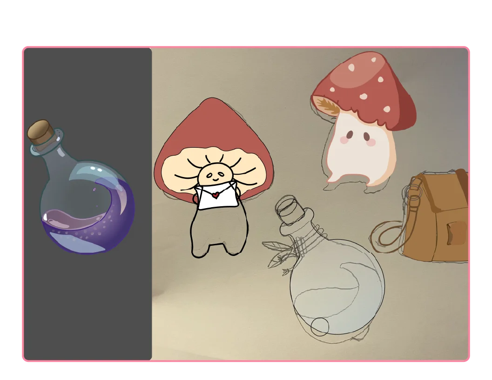
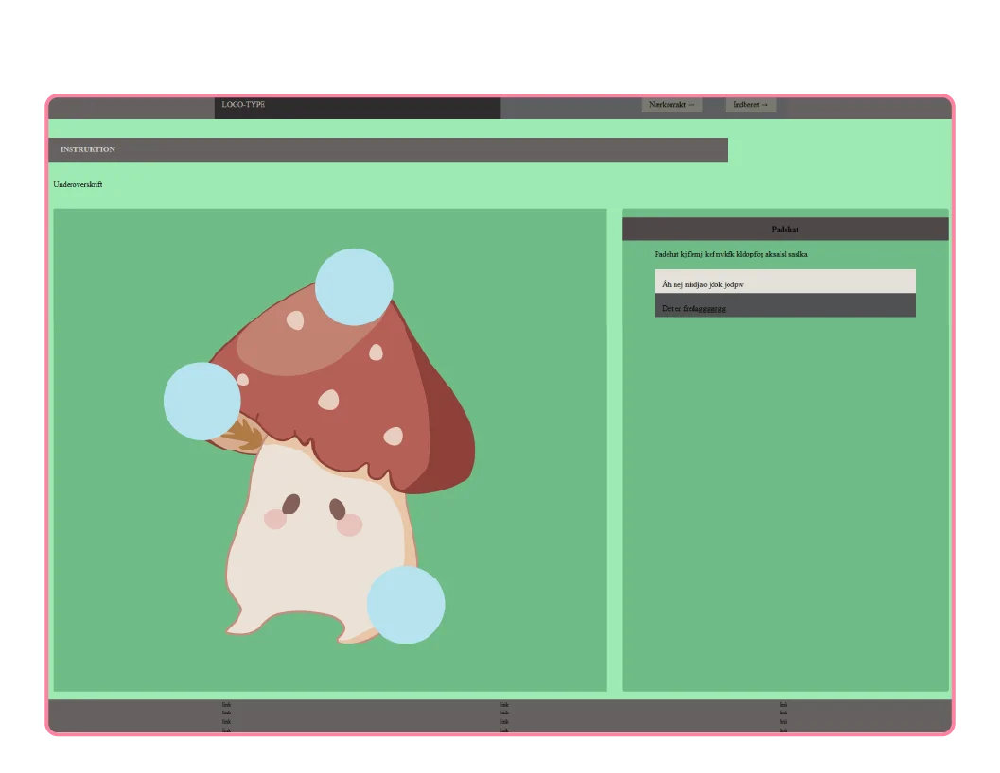
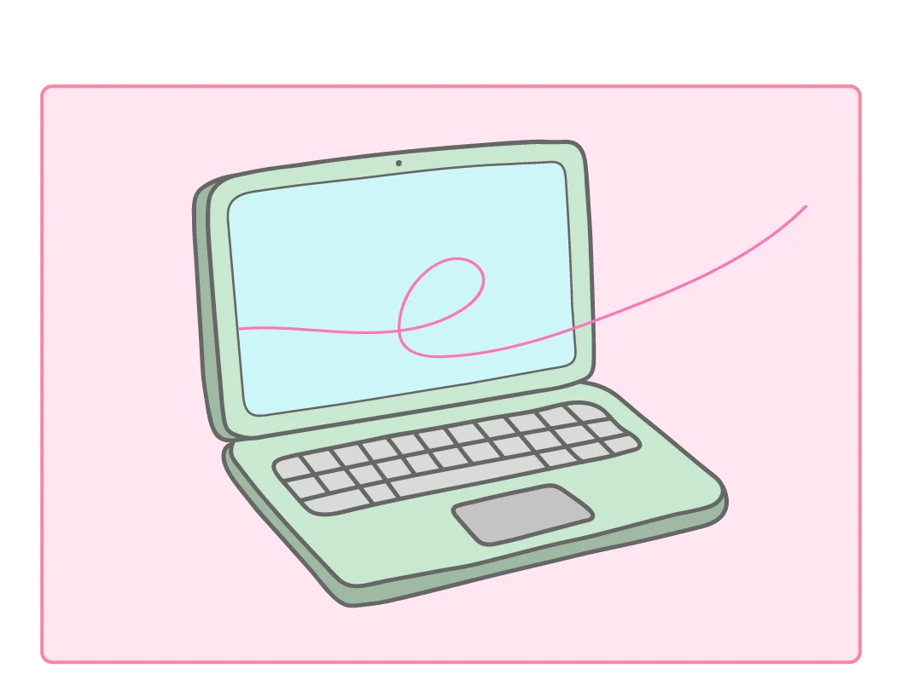

Grundlæggende Web
Tema 4
Formål
Dette første tema giver en grundlæggende introduktion til de mest anvendte redskaber i en multimediedesigners værktøjskasse. Redskaberne udgør fundamentet for resten af din uddannelse på MMD.
Du vil blive introduceret til grundlæggende faglige begreber inden for design af digitale brugergrænseflader, digital indholdsproduktion, digital kommunikation og responsivt webdesign.
Du lærer at sætte websider op i html og css og får de første hands-on færdigheder inden for udarbejdelse af grafik og billedbehandling samt opsætning af tekst og billeder i Figma.

Illustrator
Vektorgrafik og udfordringer med pen tool
I tema 3 gik jeg desværre glip af en del af processen på grund af helbredet. Inden da nåede jeg dog at bruge en god mængde tid på Adobe Illustrator, da formålet var at lære at lave SVG filer, som efterfølgende skulle indsættes i koden.
Jeg eksperimenterede med programmets forskellige værktøjer, herunder pen tool og brush tool. I starten var det bestemt ikke nemt, og jeg syntes især, at det var besværligt at styre mit pen tool. Det medførte, at jeg i stedet primært brugte min tegneskærm og dertilhørende pen. Ulempen ved den metode er dog, at man ender med utroligt mange paths og usammenhængende streger. Det er ikke optimalt for en SVG fil, da koden i editoren bliver meget lang og svær at navigere i
Teknisk udvikling og fremtidig læring
Gennem de senere temaer og i arbejdet med denne portfolio har jeg derfor brugt tid på at blive bedre til at mestre mit pen tool. Det er blevet betydeligt nemmere, og jeg kan tydeligt se, hvordan det er et langt mere effektivt og mindre tidskrævende værktøj. Hvis jeg derimod går efter et mere håndtegnet look, synes jeg stadig, at mit brush tool er det bedste valg.
Illustrator er et program, jeg rigtig godt kan lide at arbejde i, og jeg glæder mig til at udforske endnu flere af de mange værktøjer og funktioner, som programmet gemmer på.

Emergency site
Dette er en af siderne på mit emergency site, og som det kan ses på billedet, blev den langt fra færdig. Jeg nåede dog at få eksporteret min egen illustration som en SVG fil og implementeret den direkte i min kode. Oven i det dykkede jeg for alvor ned i JavaScript, hvilket igen åbnede op for en helt ny verden med mange nye begreber. Jeg lærte blandt andet, hvordan man kan tilføje en class til sine HTML elementer via JavaScript, og hvordan man kan overskrive eksisterende tekst i HTML'en, så indholdet ændrer sig dynamisk.
På min SVG illustration oprettede jeg nogle klikbare felter – de lyseblå cirkler, der kan ses på billedet – som via JavaScript gør, at vinduet ved siden af skifter indhold. I den forbindelse lærte jeg at arbejde med functions og event listeners, som er essentielle værktøjer til at skabe interaktivitet. Der er utroligt meget kodesprog at holde styr på, og man skal virkelig holde tungen lige i munden for at få alle elementerne til at spille sammen, men det var enormt spændende at se, hvordan koden kan vække designet til live.

Animationer
Selvom jeg ikke var så meget med på tema 3, som jeg havde ønsket, valgte jeg efterfølgende at kigge nærmere på animationer, da jeg tænkte, det var en vigtig kompetence at mestre. Jeg tog udgangspunkt i de øvelsesopgaver i VS Code, som var blevet stillet til rådighed, hvor man kunne afprøve forskellige animationer og få dem til at virke i praksis.
Jeg kastede mig ud i at løse opgaverne på egen hånd, og mine studiekammerater var heldigvis rigtig søde til at hjælpe og forklare tingene, når koden drillede. Jeg fik opbygget en god forståelse for grundprincipperne, og jeg har valgt at implementere nogle af disse animationer her i min portfolio. På den måde kan jeg vise, hvad jeg har lært, og demonstrere mine færdigheder, nu hvor jeg desværre ikke nåede at få det med på mit emergency site.